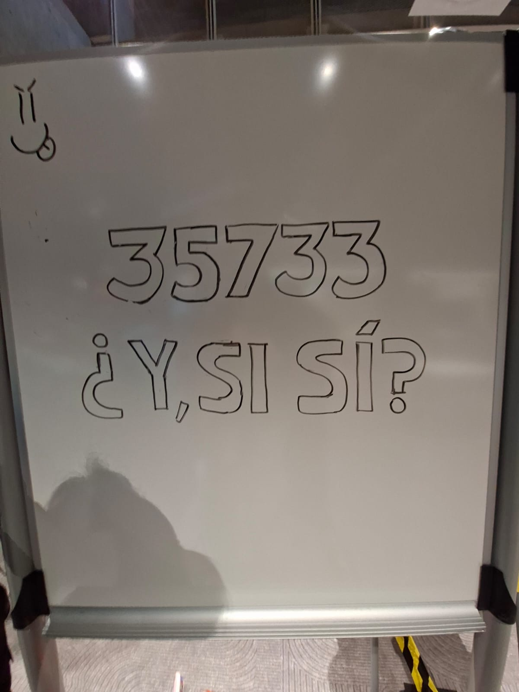
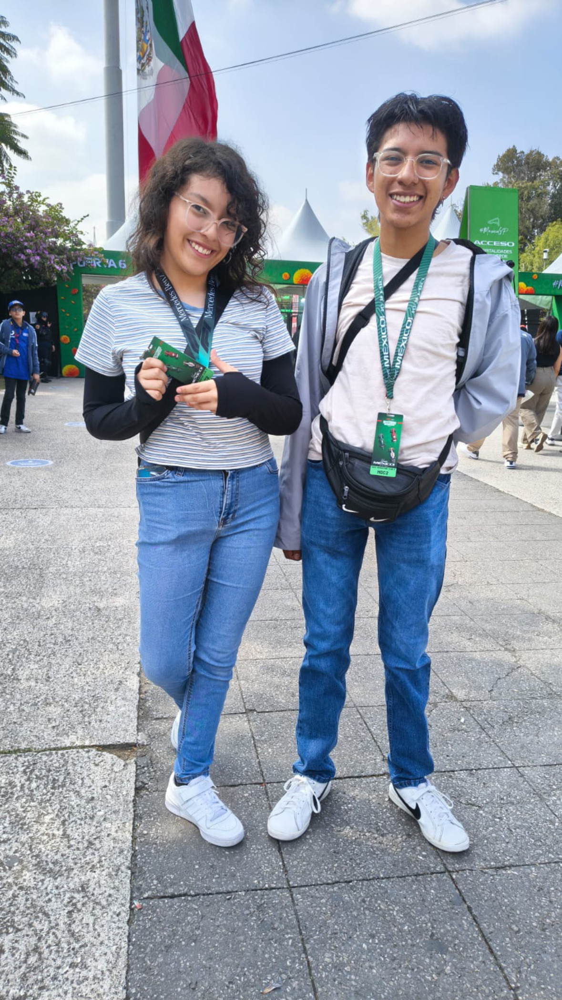
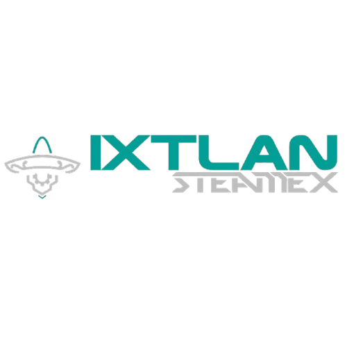
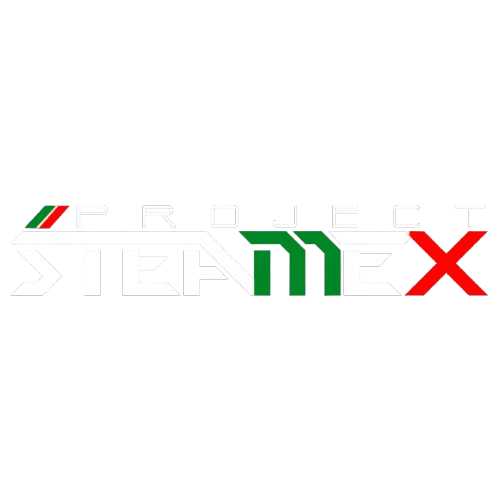

Origen
[Ciudad, escuela o comunidad de donde viene el equipo.]
Nombre
[Qué significa el nombre y qué representa cada parte.]
Fundación
[Cuándo y por qué se formó el equipo.]
Temporada actual
[Nombre del robot, qué hace y cómo se construyó.]
Camino recorrido
[Competencias, premios o reconocimientos.]

